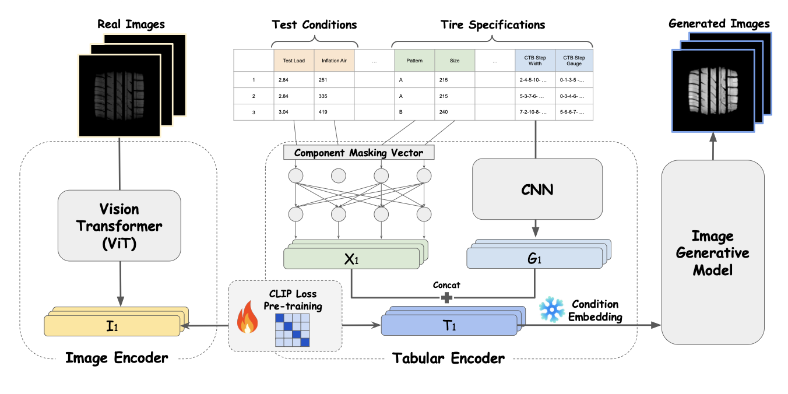

AI/ML ENGINEER & RESEARCHER
I build practical AI systems that bridge research and production. My focus is on AI Agents, LLM-based Systems, and Efficient AI — making powerful models lightweight enough for real-world deployment and designing systems that solve actual industry problems.
INTELLECTUAL FOCUS
Designing and building multi-agent systems, RAG pipelines, and LLM-powered applications that solve real-world enterprise problems — from knowledge management to automated analysis.
Distilling LLM reasoning into lightweight models, compressing heavy inference into real-time-capable systems. Bridging the gap between research-grade accuracy and production-grade latency.
Translating research into deployable systems — from tire footprint generation for manufacturing to HR analytics and legal compliance tools used in production.
Leveraging LLMs as offline reasoners and data generators to enhance recommendation systems, removing inference-time LLM dependency while preserving reasoning quality.
RESEARCH COLLECTION
An editorial collection of technical inquiries into Neural Architectures, Generative Models, and Recommendation Systems.

LLM as offline data generator for preference-aware item representations
R2END framework compressing reasoning into dense representations
Lightweight approximation of LLM-based user profiles for real-time recommendation
CAREER TRAJECTORY
TECHNICAL ARCHIVE
Multi-agent RAG system for enterprise knowledge search automation with feedback-driven updates. Built with Slack App, LangChain, and DeepAgent.
Flux-based image generation model fine-tuning and serving system with AWS EKS, RunPod infrastructure for end-to-end generative AI pipeline.
Image similarity search combined with LLM reasoning for copyright violation detection. Deployed as internal legal support tool.
Automated resume analysis, interview evaluation (STT+LLM), and LLM-based interview analysis chat. Production service used in Korea and Japan.
CTIP model for generating tire footprint images from tabular specifications. Hankook Tire industry collaboration, published at WACV 2025.
Slack-based BI assistant for querying service KPIs and generating automated reports for non-technical departments.
TECHNICAL REPERTOIRE
RECOGNITION
Developed LLM fine-tuning based on KoAlpaca and Key-Value RAG system for Korean history chatbot.
GitHubDeveloped Conditional GAN-based tire footprint image generation model. Extended into the CTIP research project (WACV 2025).
I am currently preparing for a PhD in AI. If you are interested in my research or would like to collaborate, please feel free to reach out.